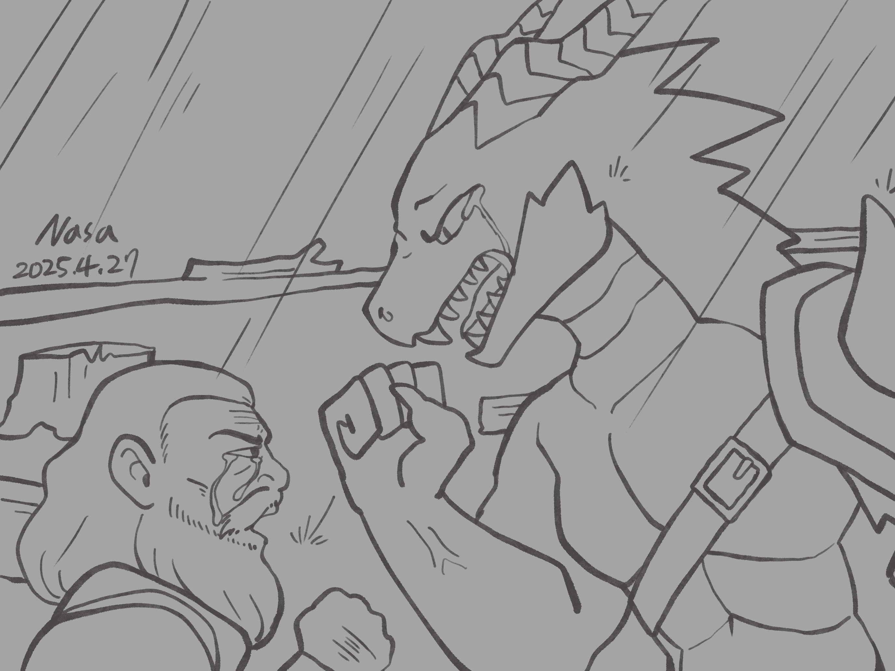
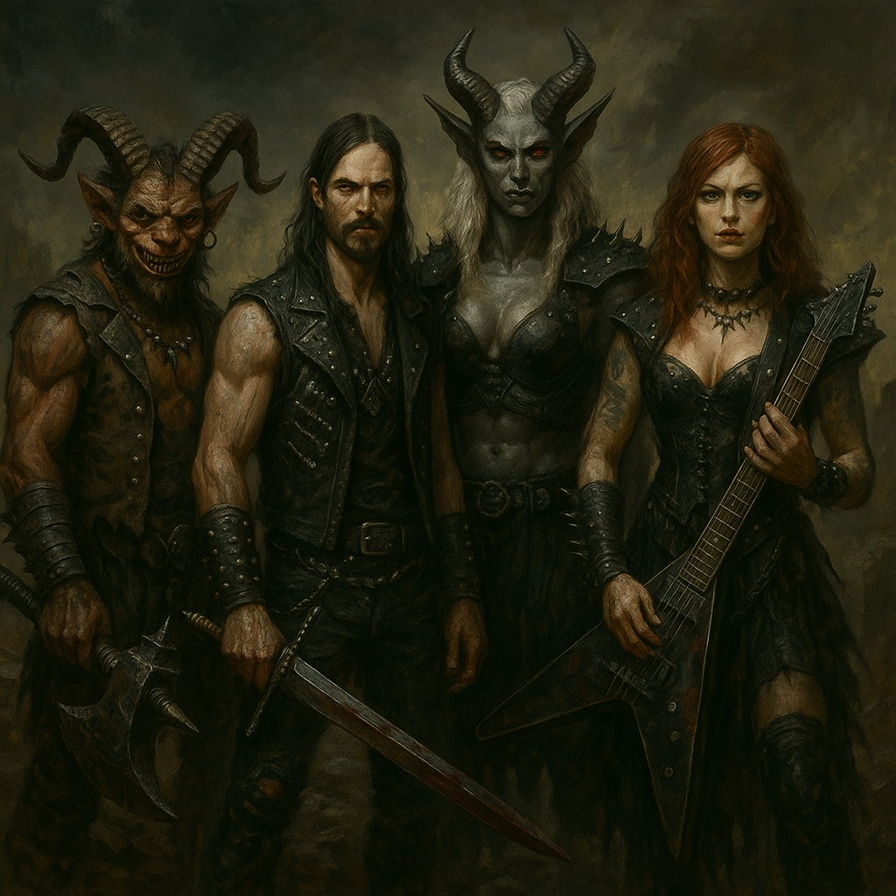
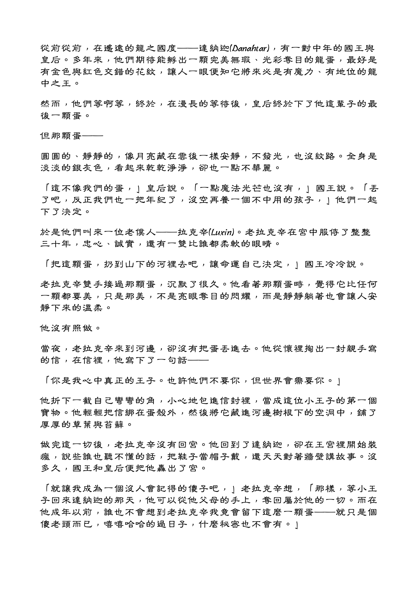

Chapter 3: Dusk of the Applewoods
Storm of Mudtown

Storm of Mudtown
15049.03.25
細劍戳向從遠方跑回的海雅特交響樂山賊背後，阿龍即時將細劍撥開，拯救了山賊的性命。
三名穿著黑色皮甲的人—方才拿著細劍的人類男子、一名咧著嘴笑的大型哥布林，以及一名壯碩、灰色皮膚的魔人—停下馬，緩緩走了下來，阿龍也第一次看到 Big Os 的眼神充斥著恐懼。哥布林雙手各拖著一個麻布袋。
在魔人的威嚇下，Big Os 衝動地表示，這次他們沒有要繳錢給上層了，他們將反抗到底。此時，哥布林將一個布袋遞給了細劍男，兩人分別將布袋打開，並把武器架在從布袋中露出的俘虜的脖子上。那是一對年長的地侏男女。阿龍睜大眼睛一看，幸好不是他的父母，但他和 Green 都只記得看過這兩人，卻認不得。
細劍男子要男地侏留下他的遺言，這名地侏說道：「如果你們回到土城，請轉達給我的女兒，Maribel — 這世界遠比她想的更廣闊。不要把自己被土城。土城無法理解她，但這個世界的其他地方，都將為她閃耀。」而當女地侏正要開口時，哥布林將巨斧砍向他的脖子，細劍男也在男地侏的脖子上劃了一刀。
隨著兩名地侏應聲落地，戰鬥一觸即發。
Connie 在第一時間便撤離回海雅特交響樂的營地內，壞四人當中的其中兩人也跑了進去，但他們的兩名同伴慌亂之際，撞到了彼此，雙雙倒臥在地。
Penny 慌了，Big Os 則分心作戰，掩護 Penny 的同時盡可能地擊退敵人，還要鼓舞他的山賊夥伴們。冒險者們從各個不同的位置分別向不同的敵人攻擊，而海雅特交響樂山賊們也盡可能地對敵人造成傷害，但他們的損傷很顯然的更嚴重。
突然，一陣音樂響起。戰場外，一名身著黑色皮衣，手持吉他的紅髮女子赫然出現在大家眼前，聲波讓大家感到暈眩。「海雅特終章」的成員就此到齊。

冒險者們發現在海雅特終章面前，山賊們的戰力根本無法相比，而他們嘗試施放的法術，甚至還有可能會被魔人的力量所抵消。鑰決定施法，將戰場轉換成一個沒有聲音的環境。無聲的戰鬥依然血腥，山賊們一一倒下。一瞬間，魔人現身在 Penny 身邊，而 Penny 看起來像是只剩一口氣了。Big Os 看了一眼阿龍，唇語說著「對不起，阿龍，我想你能理解的」。語畢，Big Os 將戰錘揮向魔人的手，將 Penny 營救出來，便馬上往樹林跑去。魔人愣了一下，很快就追上。
細劍男子很快被山賊們、Green，以及冒險者們擊倒，冒險者們也發現他的臉上竟然是貼著一張人皮。不久後，在無法用聲波攻擊的前提下，吉他女子也只剩下將他的吉他當作武器，因此很快也就倒下了。最後，在所有剩下的人圍攻下，哥布林終於倒臥在地，但山賊們也少了不少夥伴。
眼看魔人追著 Big Os 和 Penny，阿龍大喊著：「你最好給我跑的遠遠的！」接著，他和毛毛便快速跟上。阿龍眼眶滿是淚水，還不慎摔了一跤，背在背上的毛毛則看見魔人將抱著 Penny 的 Big Os 拐向旁邊，便消失了蹤影。
阿龍和毛毛蹣跚地走回營地口。眼看戰鬥結束，山賊們紛紛落寞地走回營地內，開始收拾家當。沒了他們的領袖，大家沒有任何眷戀，都打算下山去了。阿龍聽說有個魔法，可以透過所屬者的物品，找到他的位置，因此他到處翻找，找到了一件應該是屬於 Big Os 的背心，收在了背包內。雷亞拾獲了哥布林留下的巨斧以及紅髮女已經被敲碎的吉他碎片。
Connie 和清醒的兩名壞四人各騎上了一匹馬（兩名壞四人各帶著一名昏迷的同伴），羅羅則騎上最後一批。鑰將 Maribel 的父母用布袋裝好後放進他的推車內。眾人在雨中，回到了土城。
土城剛入夜，雨勢則已經大到有些難以控制了。
Connie 先帶大家回到了太陽議會。他敲了敲門，Addie 開了門後，眼睛直盯著阿龍，問他任務是否完成，緊接着也問他是不是已經將他女兒安全的送回家了？阿龍一時語塞，表示現在沒有山賊的問題了，但也表示 Penny 沒有跟著他們回來。他向 Addie 發誓，他會將 Penny 找回來。
Addie 臉色鐵青，剛剛阿龍說的話，他彷彿都沒有聽進去一樣。
「你說你要蘋果木是吧？好啊，走啊。」Addie 逕自走向雨中，朝著他們家的蘋果林走去，阿龍等人則跟上。「你要蘋果木？好啊，我就砍給你啊！」Addie 抄起放在農地的斧頭，大力地、隨意地向隨意一株蘋果木揮砍，眼神夾雜著癲狂與憤怒。阿龍也像失去理智一般，拿起武器，也大力地砍著。
蘋果木隨著 Addie 與阿龍的揮砍，丟入了維爾河，慢慢地朝下游流去。羅羅見狀，趕緊朝下游奔去。
累攤了的 Addie，將斧頭丟向河裡。他雙腿發抖，靜靜的走下了山。阿龍與其他人也一併跟上。
同一時間，抱了滿滿的蘋果木，羅羅決定先回渡鴉中樞。Riley 看見羅羅依約帶來他所要求的蘋果木，十分開心，也先將賞金給了羅羅，但也表示其他人的錢，必須要等他們回來後再給他們。
回到議會前，Addie 伸手，敲響了議會門口的鐘。土城的人們冒着雨，紛紛從家裡走了出來，聚集在議會前。
Addie 一手握着掛在胸前的金色蘋果，一邊大聲的地對着群中喊着：「我，Addie Applewood，要動用我身為議會一員的權力。」接着，Addie 看向阿龍。「Al-lon Riversand，我在此將你從土城驅逐出境，永世再也不得踏入這裡一步。同時，我也要剝奪你的姓氏，從今以後，你再也不是 Riversand 了。」眾人震驚之餘，Addie 用力捏碎手握的金蘋果，金色的碎屑掉落在了潮濕的地上。
「我要請辭我身為議會一員的身份。」Addie 平靜地說道。「我要把身份遞交給我的兒子，Cassius Applewood。」Cash 在人群中，用力掩飾內心的慌亂，慢慢走向他的父親，但 Addie 的眼神中只有憤怒、狂亂，與道不盡的哀愁。
「將家族的榮華富貴建立在自己女兒的犧牲和痛苦身上，你竟敢還引以為榮。你是個可恥的人！保護他從來都是你的責任，不是我的。」阿龍憤怒的看向 Addie。「我會找到 Penny，不是因為他是你的女兒，而是因為他是我的春天精靈，從三年前到現在，他，一直都是我的春天精靈。」
阿龍憤怒地看向逐漸遠去的 Addie，人們紛紛低頭，只有 Maribel Muddlewick 一雙堅定的眼，看着他。阿龍也看見他的父母在人群中拭着淚。
「阿龍，對不起。」Cash 從其他議會成員身邊走向阿龍。「我想動用我議員的權力撤銷我父親的決定，但我剛剛問了其他議員，他們說我父親的決定是無法撤銷的，對不起……」他用力抱了抱阿龍，哭得和阿龍一樣傷心。
人群們紛紛散去。阿龍拖着落寞的神情，看了最後一眼他的家鄉，然後朝着土城的入口走出。Maribel 與冒險者們會和，看見冒險者們對他有些支吾其詞，他大概猜到些什麼了。冒險者們將 Maribel 父親的遺言轉達給他，他們也看見 Maribel 眼中的憤怒。「離開吧，這是一個愚昧的小鎮。」阿龍對着 Maribel 說道。
土城的入口，一座原本平滑乾淨的巨大石頭，現在上面刻了一行字：Al-lon。
來到渡鴉中樞的門口，鑰詢問了 Maribel 的意願後，讓 Maribel 看了他的父母最後一面。Maribel 輕輕的在他父母的額頭上吻了一下，用雙手將他們的眼皮闔上，便頭也不回地走入了渡鴉中樞。
在雷亞的主持下，冒險者們為 Maribel 的父母進行了簡單的葬禮，將他們小心埋入阿龍與 Green 在渡鴉中樞入口旁挖出的兩個洞內。
阿龍走入渡鴉中樞的一樓，看見他的父母，找他回他們在三樓的客房。其他冒險者們則先到了二樓 Riley 的辦公室去。
阿龍的父親將一個珍藏的盒子拿了出來，裡頭有兩個東西：一根翠綠色的角，以及一封信。他告訴阿龍，當年他們在河裡撿到阿龍時，除了他的但，還撿到了這兩個東西。當初，他們不知道那根角是什麼，但隨着阿龍長大，他們便發現，這是與阿龍相同族類的角—那是一根龍角。信上寫了滿滿的文字，但阿龍的父母看不懂，阿龍發現他也看不懂，便先收藏了起來。阿龍的母親表示，希望這些能讓阿龍更清楚找到自己的身世。
阿龍和父母道別後，便也來到 Riley 的辦公室內，Maribel 也在裡頭。Riley 正將答應的酬勞分給冒險者們。
大家向阿龍詢問了剛才他與父母的對話後，阿龍便將信拿了出來，表示自己看不懂。雷亞一看，這是他懂的龍語，便從阿龍那拿來讀。不看也罷，一看，雷亞得到了一個簡單卻巨大的結論：「阿龍，你是王子！」

Riley 看了也好奇，不過他只看懂當中的地名：達納迦 (Danahtar)。他仔細一看，發現這是個回文—倒過來看的字，是一個他知道的地名，拉薩拿 (Rathanad)。
Riley 眼睛一亮，便告訴 Green，這地方就在上次 Green 出差去的城鎮的隔壁。Riley 請 Green 駕馬車，帶冒險者們前往拉薩拿，同時也能在回程時取得上次在隔壁城鎮請人做的分析結果。Green 感到無奈，不僅與冒險者們出生入死後卻沒拿到金幣，下山後隔天還得馬上再出發出差去。但身為 Riley 的員工，他也沒有辦法。
在阿龍的答應下，雷亞借了阿龍取得的綠色龍角，決定將它做成一個項鍊，讓阿龍可以掛在脖子上。
Maribel 則下定了決心，離開土城這墮落的小鎮。在鑰和毛毛的陪同下，他們一起先走回了土城，讓 Maribel 回家打包行李。他要遵循他父親的遺言，踏入這寬廣的世界。
走入土城時，Maribel 的眼神被一旁樹上的某個東西吸引了注意，不過他很快地就撇頭回來了。鑰和毛毛只注意到 Maribel 的異狀，詢問後也沒得到結果，也就不追問了。